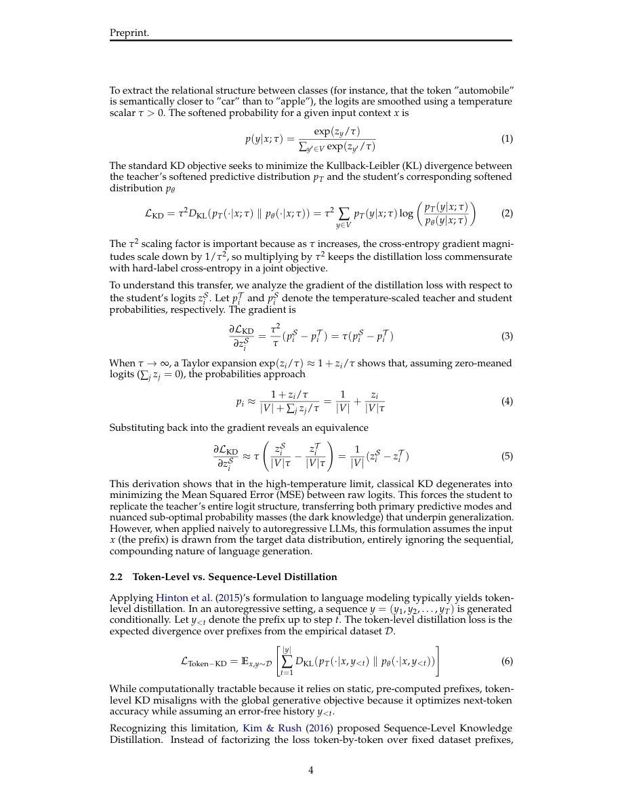

#1
★ 7/10
A Survey of On-Policy Distillation for Large Language Models
大语言模型在策略蒸馏综述

图 Figure · Page 4 of paper
🎯 首篇LLM在策略蒸馏统一综述，提出f散度框架整合全领域
First unified survey of on-policy distillation for LLMs, organizing the field with an f-divergence framework.
| 维度 | 中文 | English |
|---|---|---|
| ❓ 待解决 的问题 |
传统LLM知识蒸馏是"离策略"的：小模型只从教师生成的静态数据集中学习，从未在训练时见过自己的错误。这造成了训练与推理之间的"曝光偏差"，推理时小错误会像滚雪球一样越来越大，因为模型从未学会从自己的失误中恢复。 | Standard knowledge distillation for LLMs is "off-policy": smaller student models learn from static datasets of teacher outputs and never see their own mistakes during training. This creates a train-test mismatch called exposure bias, where small errors snowball into large failures at inference time because the model was never trained to recover from its own missteps. |
| 💡 解决 的亮点 |
• 首篇系统性的LLM在策略蒸馏（OPD）综述，填补了该领域的重要空白。 • 提出统一的f散度框架，将现有OPD目标函数统一在同一理论体系下。 • 沿三个正交维度（反馈信号类型、教师访问权限、损失粒度）组织整个OPD领域，使研究图谱一目了然。 | • First comprehensive, unified treatment of On-Policy Distillation (OPD) for LLMs, filling a critical gap in the literature. • Introduces a unified f-divergence framework that subsumes existing OPD objectives under a single theoretical lens. • Organizes the entire OPD landscape along three clean orthogonal axes: feedback signal type, teacher access level, and loss granularity — making the field immediately navigable. |
| 🧪 实验 内容 |
本文为综述论文，不包含原创实验。作者系统回顾并综合了大量OPD文献的研究结果，涵盖在推理基准（如GSM8K、MATH、MMLU）、代码生成任务和指令跟随基准上评估的方法。同时考察了主要工业实验室的实际部署案例，所有基线和评估指标均在各被综述论文的语境下讨论。 | As a survey paper, this work does not conduct original experiments. Instead, it systematically reviews and synthesizes findings from a broad corpus of OPD literature, covering methods evaluated on reasoning benchmarks (e.g., GSM8K, MATH, MMLU), code generation tasks, and instruction-following benchmarks. Industrial deployments from major labs are also examined. Baselines and metrics are discussed in the context of the surveyed papers rather than new head-to-head comparisons. |
| 📊 实验 结果 |
作为综述论文，本文未报告单一的新实验数字。但综合文献中的核心量化发现：在策略方法持续优于离策略方法，代表性工作显示从静态蒸馏切换到在策略反馈后，在GSM8K、MATH等推理基准上提升约3–10%。自博弈和奖励引导的OPD方法在MMLU、HumanEval等竞争性基准上的多个研究场景中达到最优性能。 | As a survey, no single set of new experimental numbers is reported. However, the paper synthesizes key quantitative findings from the literature: on-policy methods consistently outperform off-policy counterparts, with representative works reporting gains of 3–10% on reasoning benchmarks like GSM8K and MATH when switching from static distillation to on-policy feedback. Self-play and reward-guided OPD methods have demonstrated state-of-the-art performance on competitive benchmarks including MMLU and HumanEval in various studied settings. |
| 🏁 结论 | 本综述建立了首个针对LLM在策略蒸馏的统一理论与分类体系，证明该领域可在f散度框架下沿三个正交维度进行连贯组织。它整合了一个碎片化但快速增长的文献体系，并指出了蒸馏缩放规律、不确定性感知反馈、智能体级蒸馏等开放问题，为未来研究提供了清晰路线图。 | This survey establishes the first unified theoretical and taxonomic treatment of On-Policy Distillation for LLMs, demonstrating that the field can be coherently organized under an f-divergence framework across three orthogonal dimensions. It consolidates a fragmented but rapidly growing literature and charts a clear roadmap of open problems — including distillation scaling laws, uncertainty-aware feedback, and agent-level distillation — to guide future research. |
| 🔗 论文 链接 |
arXiv: 2604.00626v1 · 📥 PDF | |
⚙️ Method · 方法详解
作者提出一个基于在策略学生样本的统一f散度框架，从数学上将大多数现有OPD损失函数统一起来。然后沿三个正交维度对OPD文献进行系统组织：（1）反馈信号——基于logit（教师软概率）、基于结果（奖励/正确性信号）或自博弈（学生作为自身教师）；（2）教师访问权限——白盒（可访问教师logit）、黑盒（仅文本输出）或无教师；（3）损失粒度——词元级、序列级或混合级。各类代表性方法均与交互式模仿学习理论（如DAgger框架）相联系并系统分析。
The authors introduce a unified f-divergence framework defined over on-policy student samples, which mathematically generalizes most existing OPD loss functions. They then organize the OPD literature along three orthogonal dimensions: (1) feedback signal — logit-based (soft teacher probabilities), outcome-based (scalar reward or correctness signal), or self-play (student as its own teacher); (2) teacher access — white-box (full access to teacher logits), black-box (only text outputs), or teacher-free; and (3) loss granularity — token-level, sequence-level, or hybrid. Representative methods within each category are systematically analyzed and connected to interactive imitation learning theory, including DAgger-style frameworks.
📐 Key Formulas · 关键公式
\[\mathcal{L}_{\text{OPD}} = \mathbb{E}_{x \sim \mathcal{D},\, y \sim \pi_{\theta}(\cdot|x)} \left[ D_f\!\left(\pi_T(\cdot|x,y) \,\|\, \pi_{\theta}(\cdot|x,y)\right) \right]\]
💡 统一的OPD目标函数：学生模型从自身生成的轨迹中采样，用f散度衡量教师分布与学生分布之间的差距，从而将大多数在策略蒸馏方法统一在同一数学框架下。
The unified OPD objective: the student samples its own trajectories, and the f-divergence measures the gap between teacher and student distributions over those self-generated outputs, subsuming most OPD methods under one formula.
\[D_f(P \| Q) = \int q(x)\, f\!\left(\frac{p(x)}{q(x)}\right) dx\]
💡 f散度的通用定义：通过选择不同的凸函数f（如KL散度、反向KL、JS散度等），可以恢复出文献中各种不同的蒸馏损失函数。
The general f-divergence definition: by choosing different convex functions f (e.g., KL, reverse-KL, JS divergence), one recovers the various distillation loss functions seen across the OPD literature.
🌟 Why It Matters · 为什么重要
随着LLM被越来越多地压缩为可部署的小模型，通过在策略蒸馏解决曝光偏差对实际可靠性至关重要——本综述为研究者提供了整个解决方案空间的严格地图。通过将分散方法统一在同一框架下并明确开放挑战，它加速了OPD社区的研究进展，避免了重复劳动。
As LLMs are increasingly compressed into smaller deployable models, fixing exposure bias through on-policy distillation is critical for real-world reliability — this survey gives researchers a rigorous map of the entire solution space. By unifying divergent methods under one framework and identifying open challenges, it accelerates progress and prevents duplicated effort across the rapidly growing OPD community.